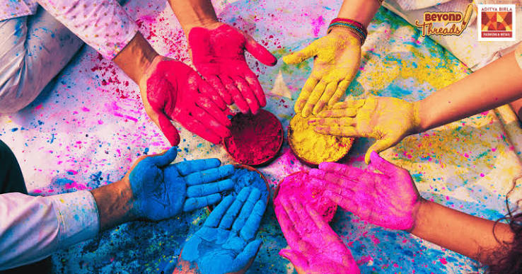
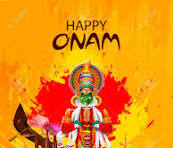

WEBPAGE FOR THE FESTIVALS OF INDIA
India is a country full of life and culture, where people from different backgrounds come together to celebrate their festivals and traditions. The colorful and vibrant celebrations of Diwali and Holi, the grand processions of Dussehra.
DIWALI
 Celebrated between October and November, the festival lasts for five days. People clean their houses, make colorful rangoli designs on the floor, and light earthen oil lamps called diyas. Families pray to Goddess Lakshmi for wealth and prosperity, wear new clothes, and share sweets and gifts with friends and loved ones.
Celebrated between October and November, the festival lasts for five days. People clean their houses, make colorful rangoli designs on the floor, and light earthen oil lamps called diyas. Families pray to Goddess Lakshmi for wealth and prosperity, wear new clothes, and share sweets and gifts with friends and loved ones.
HOLI

Holi is a vibrant Hindu spring festival known as the Festival of Colors that celebrates the triumph of good over evil and the arrival of springTiming: Celebrated over two days in late February or March, corresponding to the last full moon of the Hindu lunar month of Phalguna.
ONAM

Onam is the vibrant, ten-day state and harvest festival of Kerala, India, that marks the auspicious homecoming of the legendary and benevolent King Mahabali